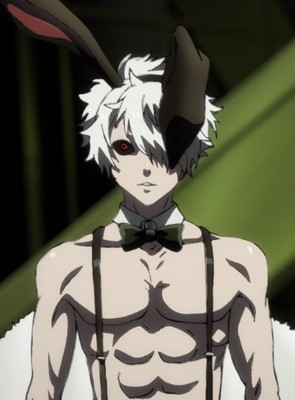
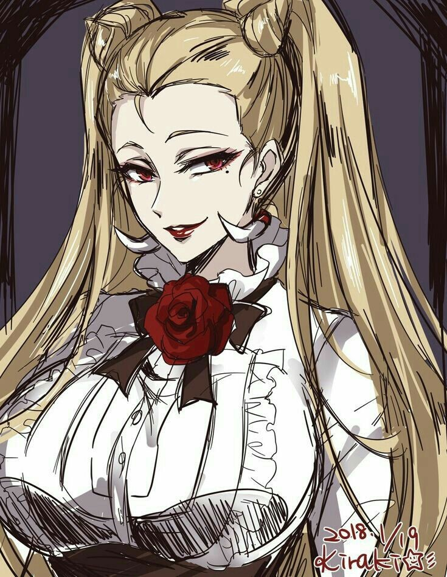
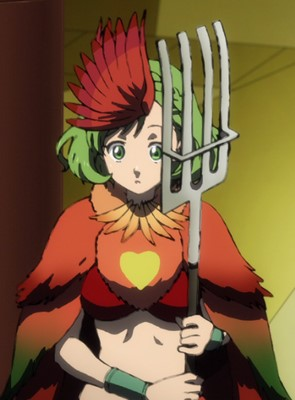
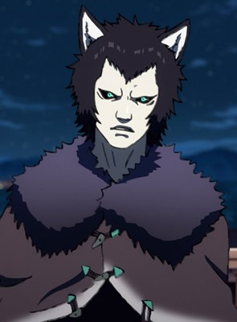
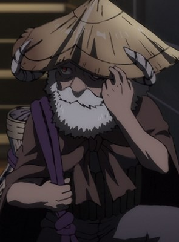
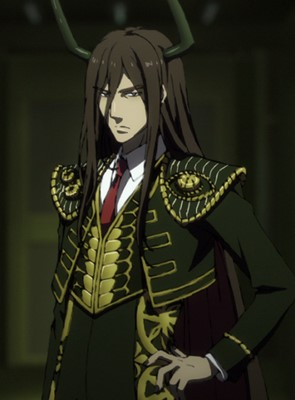
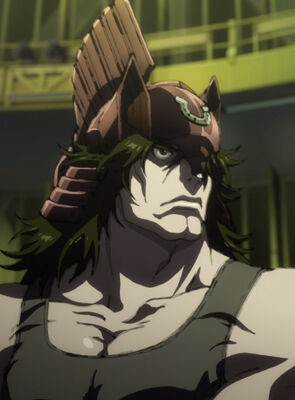
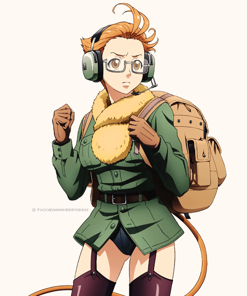
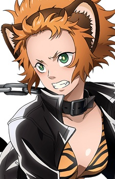

INTRO:
Juni Taisen: Zodiac War is a Japanese light novel written by Nisio Isin and illustrated by Hikaru Nakamura. It was published by Shueisha on May 19 2015. Now an Anime TV Show Series that was released on December 12 2017
SYNOPSIS:
Every 12 years, mercenaries who possess the highest caliber of brute strength, cunning wit, and deadly precision gather to participate in the Zodiac Tournament. Each warrior bears the name and attributes of one of the 12 animals of the Chinese zodiac. With their pride and lives on the line, they engage in vicious combat until only the victor remains.
The 12th Zodiac Tournament begins in a desolate city, devoid of any evidence of the half million people who recently lived there. To raise the stakes, each warrior ingests a poisonous gem, thus setting a time limit on the tournament—and on their life. With one wish for the victor up for grabs, the Zodiac Warriors start their battle for survival.
CHARACTERS:

1. Usagi ( Warrior of the Rabbit; Killing Psychotically )
His background is left Unknown. Usagi has a distorted mental state. Upon first glance, he seemed to be quite childish, careless and impulsive as well. Despite all, he is quick-witted and strategic. As seen when he purposely kill Snake before the tournament starts, this allowed him to gain an advantage to face others with his necromancy. He is always thinking ahead, preparing for his next battle. So, when he kills he does so carefully so that he doesn't cause too much damage his new "friend."
2. Inounoshishi ( Warrior of the Boar ; Killing Bountifully )
Her real name is Toshiko Inou. At first, Toshiko was an obedient daughter to her father, accomplishing whatever that her father ordered her to do. During the midst of her mission, she gave mercy to her subordinate soldier; this proves her sympathy to others. But later, she changed for the sake of participating in the 12th Zodiac War. She is shown to be very confident in winning and slightly arrogant. Her intelligence allowed her to plan her moves systematically before engaging attacks, but due to her miscalculation, Rabbit managed to kill her.


3. Niwatori ( Warrior of the Chicken ; Killing by Pecking )
Her real name is Ryouka NiwaWhile. Ryouka initially seems naïve, as seen when she reveals her powers to Dotsuku without a second thought, she is actually quite cunningーhaving deceived him from the start of their "alliance" and was merely waiting for an opportunity to get him to use his One Man Army poison on her. Immediately after the boost, she kills him. As a result of her cruel past, she has little regard for life and can't hardly tell friend from foe. Contradicting her rather cruel and cunning nature, she's a cheerful individual and can be very talkative.
4. Nezumi ( Warrior of the Rat ; Killing All )
His real name is Tsugiyoshi Sumino.Nezumi is a teenager who acts more mature than his peers. He is rather pragmatic when he comes to certain situations like the Juuni Taisen and is curious about Misaki (Sharyu)'s mindset and views about pacifism. Due to the nature of his ability, Nezumi sleeps a lot and often appears carefree. However, he once confessed to Misaki that he often wonders if his efforts in fighting are worth it, as the young warrior often feels sick whenever he thinks about how carefree and unaware the high school students at his school are of the real conflicts in the world.


5. Dotsuku ( Warrior of the Dog ; Killing by Biting )
His real name is Michio Tsukui. Dotsuku is the type to not carry a weapon; rather he is the type to bite with his fangs. Dotsuku is feared and is called ‘Kyoukenbyou’ for his fangs that bite anything but he was also shown to have a soft heart, like when he risked his life to rescue a child from a pedophile client and works hard to giver her a proper upbringing. Dotsuku appears to be very cunning as he always thinks of a plan to give him an advantage but can also be overconfident and trusting as shown with his encounter with Niwatori which leads to his downfall.
6. Hitsujii ( Warrior of the Sheep ; Killing Deceptively )
His real name is Sumihiko Tsujiie.Hitsujii is shown as being very strategic and calculative. He is shown being able to manipulate other warriors and is capable of predicting their strength with little information. He is quite cunning and ready to betray and trick others into furthering his chances of victory. However, he also had shown occasionally underestimating opponents, like when he was caught off guard by Tiger. Hitsujii is shown having a close relationship with his grandchild and has shown being quite considerate of his opinions. Hitsujii decided to participate in the 12th Juuni Taisen to protect his grandchild.


7. Tasumi Kyodai Ani ( Warrior of the Dragon ; Killing for Money )
His real name is Nagayuki Tsumita. He is older twin of Takeyasu Tsumita. Nagayuki is very close to his younger brother, Takeyasu Tsumita, and was initially shocked to hear the news that only one of them could win the Juuni Taisen. The flashbacks on their focal episode indicate that the two had a playful relationship, frequently holding competitions to see who stole the most valuable item. It is heavily implied that he misses his younger brother, and his nonchalant attitude towards his death was simply an act to keep a strong face towards the other warriors. The novel outright states that he was relieved to not be the one to kill his own brother. However, Nagayuki is an amoral individual with a cynical view on morals. The money that he gives away to the poor from heists that he pulls of may depict him as a modern day Robin Hood. But his intentions are far from it, giving the money only cause he was bored and receiving satisfaction from the sheer fact that the consequences would usually result in horrific outcomes.
8. Tasumi Kyodai Otouto ( Warrior of the Snake ; Killing for Money )
His real name is Takeyasu Tsumita. He is younger twin of Nagayuki Tsumita. Takeyasu Tsumita is very close to his older brother, Nagayuki, and was initially disheartened when he heard that only one of them could win the Juuni Taisen. His profile in the novel also hints to a more sadistic side, stating that he burns his victims till they are unrecognisable. He is the more foolish and brash brother. Often getting himself into sticky situations and thus requiring dragon to come in to save him from his screw ups. Such as that time were he tripped an alarm while stealing jewelry. His profile in the novel also hints to a more sadistic side, stating that he burns his victims till they were unrecognisable and that he would have became a serial arsonist if he wasn't born in the house of snake. Like his older brother, Takeyasu is a amoral person with no regards towards human life. Showing no remorse for killing a young boys older brother in a fire he caused while on an operation with Dragon. Him pulling off Robin Hood deeds with his brother is also very misleading as they do not actually have good intentions, instead seeing it as plain fun, especially when their "deeds" goes horribly wrong.


9. Ushii ( Warrior of the Ox ; Killing Systematically )
His real name is Eiji Kashii. Ushii is presented as a stoic and levelheaded man, considered to be smart and quick witted by other warriors. He has a cold and analytical personality and looks at things with a logical outlook. He is devoted to doing the right thing and follows a simple philosophy of "deciding to do right and then doing right." Although not explicitly mentioned in the anime, he had decided to try and kill all the other fighters as a form of mercy upon discovering that there was a necromantist within the group.[3] Despite his feared reputation, Ox shows great respect towards his opponents and is capable of being compassionate as shown with his past interaction with Tora, helping her out after assuming she was a lost child and trying to save her after being attacked by Usagi.Throughout the novel, he is described as morose and gloomy by the narration.Outside of battle, Ox goes out to restaurants alone due to his lack of knowledge on how to cook and also abstains from alcohol. He's also described as having a large appetite despite his thin build.
10. Uuma ( Warrior of the Horse ; Killing Silently )
His real name is Yoshimi Souma.He is known as a man of few words, proclaimed moderate, and only his closest associates have heard him speak, aside from when he introduces himself before the battle. In battle, he fights with a stoicism befitting his quiet nature. However, it is later revealed this stoic attitude is merely a facade as inspite of his immense size and power, Uuma is a coward at heart, quick to run away from a fight and hide. Inspite of his cowardly behavior he is shown to also have an immense level of determination and willpower, willingly subjecting himself to numerous experiments and training regiments that granted him his incredible physical prowess.


11. Sharyu ( Warrior of the Monkey ; Killing Peacefully )
Her real name is Misaki Yuuki. Misaki is a kind young woman who loves to bake pastries. A pacifist by nature, Misaki prefers to take an optimistic approach to life, not giving up, despite having been countlessly exposed to the horrors of war and the dark side of human nature and prefers to believe in the goodness in people. Despite her claim of pacifism, though, Misaki will defend herself, if her life is in danger. If her attempt at talking fails at first, she will opt to disarm her opponent and then try to talk them down.
12. Tora ( Warrior of the Tiger ; Killing in Rage )
Her real name is Kanae Aira.Tora is shown to be an alcoholic. Whenever she is drunk, her mental state becomes clumsy and empty-headed. She also becomes rather blunt, constantly implying she saw multiple Sheep standing in front of her, although it is just the side effects of alcohol intake.
